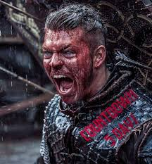

Ivar nasceu paraplégico, deixado para morrer por Ragnar, mas a Rainha Auslag descobriu e o resgatou. Viking nervoso e com táticas de guerras impressionante o levaram a ser coroado como Rei de Kattegat. Mais tarde conhecido como Deus, por "poder ter um filho".
